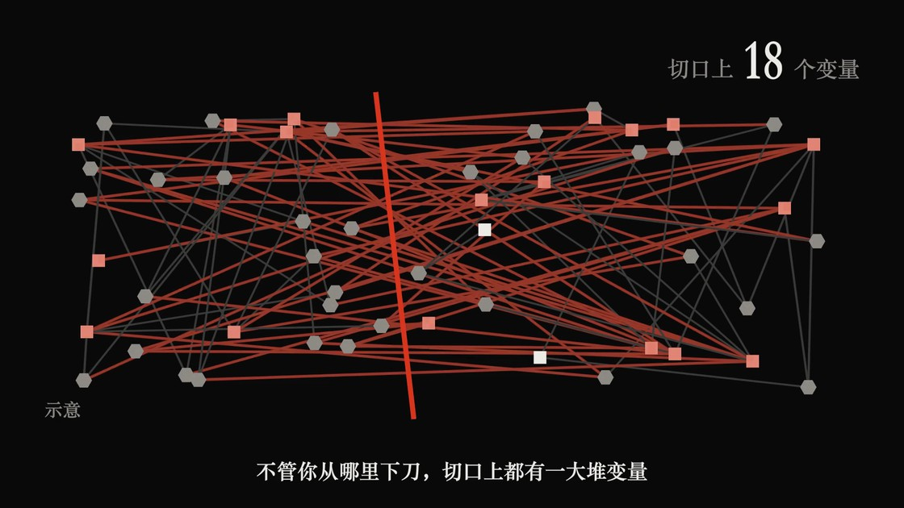
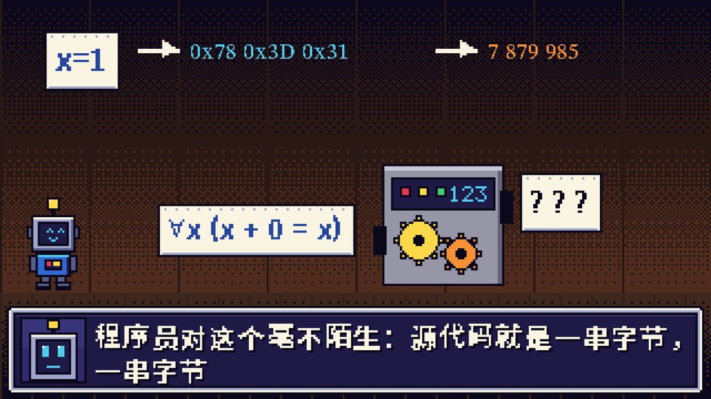

KEPU-STUDIO · A CLAUDE CODE PLUGIN
科普番剧工坊
动漫 / 动画 / 游戏风中文科普视频的一条龙工作流
多音字
合成前定死 ·
希腊字母
按英文念 · taste 定
画风
讲义 · 逐字稿 · 分级 · 耳检 · 四道关卡 · 复盘
合并自
《ETH 之墙》
与
《地基之下》
两部作品的实战

EVA 标题卡
ManimGL · 《ETH 之墙》

像素 RPG
Pillow + numpy · 《地基之下》